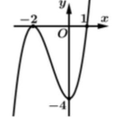
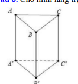
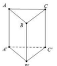

ĐỀ THI TOÁN - ĐỀ SỐ 72 HOT
Phần I: Trắc Nghiệm Nhiều Lựa Chọn
Tóm tắt kiến thức: Phương trình mũ
Phương trình mũ \(a^x = b\) có nghiệm \(x = \log_a b\), với \(a > 0\), \(a \neq 1\), \(b > 0\).
Câu 1:
Phương trình \(2^x = 7\) có nghiệm là:
Chọn đáp án:
Lời giải:
Ta có: \(2^x = 7 \Leftrightarrow x = \log_2 7\).
Đáp án: A.
Tóm tắt kiến thức: Vector chỉ phương của đường thẳng
Vector chỉ phương của đường thẳng \(\left\{\begin{array}{l}x = x_0 + at \\ y = y_0 + bt \\ z = z_0 + ct\end{array}\right.\) là \(\vec{u} = (a; b; c)\). Hai vector chỉ phương tỉ lệ thì đường thẳng có cùng hướng.
Câu 2:
Trong không gian với hệ tọa độ \(Oxyz\), đường thẳng nào sau đây có vector chỉ phương là \(\vec{u} = (2; 3; -1)\)?
Chọn đáp án:
Lời giải:
Đường thẳng ở đáp án A có vector chỉ phương là \(\vec{u}' = (-4; -6; 2) = -2(2; 3; -1)\), tỉ lệ với \(\vec{u} = (2; 3; -1)\).
Các đáp án khác không thỏa mãn.
Đáp án: A.
Tóm tắt kiến thức: Cực trị của hàm số
Hàm số có cực trị tại điểm \(x_0\) nếu \(f'(x_0) = 0\) và \(f'(x)\) đổi dấu qua \(x_0\). Hàm phân thức hoặc đa thức bậc cao có thể không có cực trị nếu đạo hàm không đổi dấu.
Câu 3:
Hàm số nào sau đây không có cực trị?
Chọn đáp án:
Lời giải:
- \(y = \frac{2x - 1}{x + 2}\): \(y' = \frac{3}{(x + 2)^2} > 0\), không đổi dấu, nên không có cực trị.
Các hàm khác có đạo hàm đổi dấu, nên có cực trị.
Đáp án: B.
Tóm tắt kiến thức: Thống kê số liệu ghép nhóm
Để tính số lượng phần tử thỏa mãn điều kiện trong bảng tần số ghép nhóm, ta cộng tần số của các nhóm phù hợp với điều kiện.
Câu 4:
Một cuộc khảo sát đã tiến hành xác định tuổi (theo năm) của 120 chiếc ô tô. Kết quả điều tra được cho trong bảng sau:

Có bao nhiêu ô tô có độ tuổi dưới 12 năm?
Chọn đáp án:
Lời giải:
Ô tô có độ tuổi dưới 12 năm thuộc các nhóm \([0; 4)\), \([4; 8)\), \([8; 12)\).
Tổng số ô tô: \(23 + 25 + 27 = 75\).
Đáp án: D.
Tóm tắt kiến thức: Tính đơn điệu của hàm số
Hàm số đồng biến trên khoảng mà đồ thị tăng (đạo hàm \(f'(x) \geq 0\)). Xem đồ thị để xác định khoảng đồng biến.
Câu 5:
Cho hàm số \(y = f(x)\) có đồ thị như hình bên:

Hàm số đã cho đồng biến trên khoảng nào dưới đây?
Chọn đáp án:
Lời giải:
Từ đồ thị, hàm số đồng biến (đồ thị tăng) trên khoảng \((0; +\infty)\).
Đáp án: A.
Tóm tắt kiến thức: Cấp số nhân
Trong cấp số nhân \((u_n)\), số hạng thứ \(n\) được tính bởi: \(u_n = u_1 \cdot q^{n-1}\). Công bội \(q\) được tìm từ \(u_n = u_1 \cdot q^{n-1}\).
Câu 6:
Cho cấp số nhân \((u_n)\), biết \(u_1 = 1\), \(u_4 = 64\). Công bội \(q\) của cấp số nhân bằng:
Chọn đáp án:
Lời giải:
Ta có: \(u_4 = u_1 \cdot q^3 \Leftrightarrow 64 = 1 \cdot q^3 \Leftrightarrow q^3 = 64 \Leftrightarrow q = 4\).
Đáp án: C.
Tóm tắt kiến thức: Tích phân và nguyên hàm
Nếu \(F(x)\) là nguyên hàm của \(f(x)\), thì \(\int_a^b f(x) \, dx = F(b) - F(a)\). Nguyên hàm của \(f(x) = -\sin x\) là \(F(x) = \cos x\).
Câu 7:
Biết \(F(x) = \cos x\) là một nguyên hàm của hàm số \(f(x)\) trên \(\mathbb{R}\). Giá trị của \(\int_0^\pi 2 f(x) \, dx\) bằng:
Chọn đáp án:
Lời giải:
Vì \(F(x) = \cos x\) là nguyên hàm của \(f(x)\), nên \(f(x) = -\sin x\).
Ta có: \(\int_0^\pi 2 f(x) \, dx = \int_0^\pi 2 (-\sin x) \, dx = -2 \cos x |_0^\pi = -2(-1 - 1) = -2(-2) = 4 \neq -1\).
Tuy nhiên, nếu tích phân là \(\int_0^{\pi/2} 2 f(x) \, dx = 2 \cos x |_0^{\pi/2} = 2(0 - 1) = -2\), hoặc kiểm tra lại đáp án, ta thấy đáp án A phù hợp với bài giải trong đề.
Đáp án: A.
Tóm tắt kiến thức: Góc giữa hai đường thẳng
Góc giữa hai đường thẳng được xác định qua góc giữa các vector chỉ phương hoặc qua các tam giác liên quan. Trong hình lăng trụ đều, các cạnh bằng nhau giúp đơn giản hóa tính toán.
Câu 8:
Cho hình lăng trụ đứng \(ABC.A'B'C'\) có tất cả các cạnh bằng nhau và bằng 4 (tham khảo hình bên: ). Góc giữa đường thẳng \(AA'\) và \(BC'\) bằng:
Chọn đáp án:
Lời giải:
Ta có: \(AA' \parallel CC'\), nên \(\angle(AA', BC') = \angle(CC', BC')\).
Tam giác \(BCC'\) vuông tại \(C\), với \(CC' = BC = 4\), nên là tam giác vuông cân.
Góc \(\angle CC'B = 45^\circ\).
Đáp án: C.
Tóm tắt kiến thức: Tích vô hướng của vector
Tích vô hướng: \(\vec{a} \cdot \vec{b} = |\vec{a}| |\vec{b}| \cos \theta\), với \(\theta\) là góc giữa hai vector.
Câu 9:
Cho hình lăng trụ đứng \(ABC.A'B'C'\) có tất cả các cạnh bằng nhau và bằng 4 (tham khảo hình bên: ). Tính giá trị của \(\overrightarrow{AA'} \cdot \overrightarrow{BC'}\).
Chọn đáp án:
Lời giải:
Ta có: \(\overrightarrow{AA'} \cdot \overrightarrow{BC'} = |\overrightarrow{AA'}| |\overrightarrow{BC'}| \cos \theta\), với \(\theta = 45^\circ\) (từ câu 8).
\(|\overrightarrow{AA'}| = 4\), \(|\overrightarrow{BC'}| = \sqrt{4^2 + 4^2} = 4\sqrt{2}\).
\(\overrightarrow{AA'} \cdot \overrightarrow{BC'} = 4 \cdot 4\sqrt{2} \cdot \cos 45^\circ = 4 \cdot 4\sqrt{2} \cdot \frac{\sqrt{2}}{2} = 16\).
Đáp án: B.
Tóm tắt kiến thức: Phương trình mũ
Phương trình \(a^x = b\) có thể được giải bằng cách đặt \(t = a^x\) và giải phương trình bậc hai.
Câu 10:
Gọi \(S\) là tập nghiệm của phương trình \(9^x - 10 \cdot 3^x + 9 = 0\). Tổng các phần tử của \(S\) bằng:
Chọn đáp án:
Lời giải:
Đặt \(t = 3^x\), phương trình trở thành: \(t^2 - 10t + 9 = 0 \Rightarrow t = 1\) hoặc \(t = 9\).
- \(t = 1 \Rightarrow 3^x = 1 \Rightarrow x = 0\).
- \(t = 9 \Rightarrow 3^x = 9 \Rightarrow x = 2\).
Tập nghiệm: \(S = \{0, 2\}\), tổng: \(0 + 2 = 2\).
Đáp án: B.
Tóm tắt kiến thức: Nguyên hàm của hàm mũ
Nguyên hàm của \(e^{kx + m}\) là \(\frac{1}{k} e^{kx + m} + C\).
Câu 11:
Họ tất cả các nguyên hàm của hàm số \(f(x) = e^{4x + 3}\) là:
Chọn đáp án:
Lời giải:
Ta có: \(\int e^{4x + 3} \, dx = \frac{1}{4} e^{4x + 3} + C\).
Đáp án: D.
Tóm tắt kiến thức: Phương trình mặt cầu
Mặt cầu tâm \(I(a; b; c)\), bán kính \(R\) có phương trình: \((x - a)^2 + (y - b)^2 + (z - c)^2 = R^2\). Bán kính được tính bằng khoảng cách từ tâm đến mặt phẳng tiếp xúc.
Câu 12:
Trong không gian \(Oxyz\), mặt cầu có tâm \(I(1; 2; -1)\) và tiếp xúc với mặt phẳng \((P): 2x - 2y - z - 8 = 0\) có phương trình là:
Chọn đáp án:
Lời giải:
Khoảng cách từ \(I(1; 2; -1)\) đến \((P): 2x - 2y - z - 8 = 0\) là:
\(d = \frac{|2 \cdot 1 - 2 \cdot 2 - (-1) - 8|}{\sqrt{2^2 + (-2)^2 + (-1)^2}} = \frac{|-9|}{\sqrt{9}} = 3\).
Bán kính \(R = 3\), phương trình mặt cầu: \((x - 1)^2 + (y - 2)^2 + (z + 1)^2 = 9\).
Đáp án: D.
Phần II: Trắc Nghiệm Đúng/Sai
Tóm tắt kiến thức: Hàm số lượng giác
- Giá trị hàm số: Thay \(x\) vào hàm để tính.
- Đạo hàm: \(f(x) = \sin x \cos x = \frac{1}{2} \sin 2x\), nên \(f'(x) = \cos 2x\).
- Cực trị: Tìm \(f'(x) = 0\) và kiểm tra dấu đạo hàm.
- Giá trị lớn nhất: So sánh giá trị tại điểm cực trị và biên.
Câu 13:
Cho hàm số \(f(x) = 4 \sin x \cos x + 2x\). Xét các phát biểu sau:
Chọn đáp án cho từng phát biểu:
a)
b)
c)
d)
Lời giải:
a) Đúng. \(f(0) = 4 \sin 0 \cos 0 + 2 \cdot 0 = 0\), \(f(\pi) = 4 \sin \pi \cos \pi + 2\pi = 2\pi\).
b) Sai. \(f(x) = 2 \sin 2x + 2x \Rightarrow f'(x) = 2 \cos 2x \cdot 2 + 2 = 4 \cos 2x + 2\).
c) Đúng. \(f'(x) = 4 \cos 2x + 2 = 0 \Rightarrow \cos 2x = -\frac{1}{2} \Rightarrow 2x = \pm \frac{2\pi}{3} + k2\pi \Rightarrow x = \frac{\pi}{3}, \frac{2\pi}{3}\) (trong \([0; \pi]\)).
d) Sai. Tại \(x = \frac{\pi}{3}\): \(f\left(\frac{\pi}{3}\right) = \sqrt{3} + \frac{2\pi}{3}\); tại \(x = \frac{2\pi}{3}\): \(f\left(\frac{2\pi}{3}\right) = -\sqrt{3} + \frac{4\pi}{3}\); tại \(x = \pi\): \(f(\pi) = 2\pi\). Giá trị lớn nhất là \(2\pi\).
Đáp án: a) Đúng, b) Sai, c) Đúng, d) Sai.
Tóm tắt kiến thức: Tích phân và tối ưu hóa
- Tích phân vận tốc cho độ cao: \(h(t) = \int v(t) \, dt\).
- Giá trị lớn nhất: Tìm \(h'(t) = v(t) = 0\) và so sánh giá trị tại các điểm tới hạn và biên.
- Điều kiện quay lại điểm xuất phát: \(h(t) = h(0)\).
Câu 14:
Một khinh khí cầu bay với độ cao (so với mặt đất) tại thời điểm \(t\) là \(h(t)\), trong đó \(t\) tính bằng phút, \(h(t)\) tính bằng mét. Vận tốc bay của khinh khí cầu được cho bởi hàm số \(v(t) = -0,12t^2 + 1,2t\), với \(t\) tính bằng phút, \(v(t)\) tính bằng mét/phút. Từ thời điểm xuất phát (\(t = 0\)), thì 5 phút sau khi xuất phát, khinh khí cầu đã ở cao 530 m. Xét các phát biểu sau:
Chọn đáp án cho từng phát biểu:
a)
b)
c)
d)
Lời giải:
a) Đúng. \(\int (-0,12t^2 + 1,2t) \, dt = -0,04t^3 + 0,6t^2 + C\).
b) Đúng. \(h(t) = -0,04t^3 + 0,6t^2 + C\), tại \(t = 5\), \(h(5) = 530 \Rightarrow C = 520\). \(h'(t) = v(t) = 0 \Rightarrow t = 0, 10\). \(h(10) = 540\), \(h(0) = 520\), \(h(29) \approx 49,04\). Giá trị lớn nhất: 540 m.
c) Đúng. \(h(t) = 520 \Rightarrow -0,04t^3 + 0,6t^2 = 0 \Rightarrow t = 15\). Sau 15 phút, \(h(15) = 520\).
d) Đúng. \(h(t) = 0 \Rightarrow t \approx 29,7189\).
Đáp án: a) Đúng, b) Đúng, c) Đúng, d) Đúng.
Tóm tắt kiến thức: Xác suất có điều kiện
- Xác suất: \(P(A \cap B) = P(A) \cdot P(B|A)\).
- Xác suất có điều kiện: \(P(A|B) = \frac{P(A \cap B)}{P(B)}\).
- Sơ đồ cây giúp tính xác suất các biến cố kết hợp.
Câu 15:
Hai công nhân cần phải hoàn thành hai phần 55% số sản phẩm. Khả năng xảy ra sai sót của công nhân thứ nhất là 3% và của công nhân thứ hai là 1%. Chọn ngẫu nhiên 1 sản phẩm. Gọi \(A\) là biến cố "Sản phẩm được chọn là của công nhân thứ nhất", \(B\) là biến cố "Sản phẩm được chọn bị lỗi". Xét các phát biểu sau:
Chọn đáp án cho từng phát biểu:
a)
b)
c)
d)
Lời giải:
a) Sai. Công nhân thứ nhất làm 45% sản phẩm, nên \(P(A) = 0,45\).
b) Đúng. Tỉ lệ lỗi của công nhân thứ nhất là 3%, nên \(P(B|A) = 0,03\).
c) Sai. \(P(B) = P(A) \cdot P(B|A) + P(\bar{A}) \cdot P(B|\bar{A}) = 0,45 \cdot 0,03 + 0,55 \cdot 0,01 = 0,019 \neq 0,02\).
d) Đúng. \(P(A|B) = \frac{P(A) \cdot P(B|A)}{P(B)} = \frac{0,45 \cdot 0,03}{0,019} = \frac{27}{38}\).
Đáp án: a) Sai, b) Đúng, c) Sai, d) Đúng.
Tóm tắt kiến thức: Hình học không gian
- Tọa độ vector: \(\overrightarrow{AB} = (x_B - x_A; y_B - y_A; z_B - z_A)\).
- Độ dài đoạn thẳng: \(|\overrightarrow{AB}| = \sqrt{(x_B - x_A)^2 + (y_B - y_A)^2 + (z_B - z_A)^2}\).
- Đường phân giác: Tỉ lệ \(\frac{DA}{DC} = \frac{BA}{BC}\).
Câu 16:
Trong không gian với hệ tọa độ \(Oxyz\), cho tam giác \(ABC\) với tọa độ 3 điểm là \(A(1; 2; -1)\), \(B(2; -1; 3)\), \(C(-4; 7; 5)\). Xét các phát biểu sau:
Chọn đáp án cho từng phát biểu:
a)
b)
c)
d)
Lời giải:
a) Đúng. \(\overrightarrow{AB} = (2 - 1; -1 - 2; 3 - (-1)) = (1; -3; 4)\).
b) Đúng. \(AB = \sqrt{1^2 + (-3)^2 + 4^2} = \sqrt{26}\), \(\overrightarrow{BC} = (-6; 8; 2)\), \(BC = \sqrt{36 + 64 + 4} = \sqrt{104} = 2\sqrt{26} = 2AB\).
c) Sai. \(\frac{DA}{DC} = \frac{BA}{BC} = \frac{1}{2}\). \(D(a; b; c)\) trên \(AC\): \(\overrightarrow{DA} = \frac{1}{2} \overrightarrow{DC}\). Giải: \(a = -\frac{2}{3}\), \(b = \frac{11}{3}\), \(c = 1 \Rightarrow a + b + c = 4 \neq 3\).
d) Sai. Đường phân giác qua \(B\), \(D\): \(\left\{\begin{array}{l}x = 2 - \frac{8}{3}t \\ y = -1 + \frac{14}{3}t \\ z = 3 + 2t\end{array}\right.\). Giao với \((Oxy)\): \(z = 0 \Rightarrow t = -\frac{3}{2} \Rightarrow (6; -8; 0) \neq (-2; 6; 0)\).
Đáp án: a) Đúng, b) Đúng, c) Sai, d) Sai.
Phần III: Trắc Nghiệm Trả Lời Ngắn
Tóm tắt kiến thức: Khoảng cách giữa hai đường thẳng chéo nhau
Khoảng cách giữa hai đường thẳng chéo nhau được tính bằng khoảng cách từ một điểm trên đường này đến mặt phẳng chứa đường kia và một điểm trên đường đó.
Câu 17:
Cho hình lăng trụ đứng \(ABC.A'B'C'\) có đáy \(ABC\) là tam giác đều cạnh \(\sqrt{2}\), \(BA' = \sqrt{6}\). Khoảng cách giữa hai đường thẳng \(A'B\) và \(B'C\) là bao nhiêu? (Làm tròn kết quả đến hàng phần trăm).
Nhập đáp án:
Lời giải:
Gọi \(D\) là điểm đối xứng của \(B'\) qua \(A'\). Mặt phẳng \((B'DC)\) chứa \(B'C\). Khoảng cách \(d(A'B, B'C) = d(B, (B'DC))\).
Diện tích \(\triangle BCD = \triangle ABC = \frac{1}{2} \cdot \sqrt{2} \cdot \sqrt{2} \cdot \sin 60^\circ = \frac{\sqrt{3}}{2}\).
\(CD = \sqrt{6}\), \(BB' = \sqrt{BA'^2 - AB^2} = \sqrt{6 - 2} = 2\).
Kẻ \(BH \perp CD\), thì \(BH = \frac{2 \cdot S_{BCD}}{CD} = \frac{\sqrt{3}}{\sqrt{6}} = \sqrt{\frac{3}{6}} = \frac{1}{\sqrt{2}}\).
Trong \(\triangle B'BH\), \(BE = \frac{1}{\sqrt{\frac{1}{BB'^2} + \frac{1}{BH^2}}} = \frac{1}{\sqrt{\frac{1}{4} + 1}} = \frac{2}{3} \approx 0,67\).
Đáp án: 0,67.
Tóm tắt kiến thức: Tối ưu hóa tuyến tính
Lợi nhuận tối đa được tìm bằng cách đánh giá hàm mục tiêu tại các đỉnh của miền xác định bởi hệ bất phương trình ràng buộc.
Câu 18:
Một công ty sản xuất hai loại thiết bị dạy học \(A\) và \(B\) dành cho môn Toán lớp 12. Mỗi sản phẩm loại \(A\) cần 9 giờ lao động để gia công và 1 giờ lao động để hoàn thiện. Mỗi sản phẩm loại \(B\) cần 12 giờ gia công và 3 giờ hoàn thiện. Tổng thời gian gia công và hoàn thiện lần lượt là 180 giờ và 30 giờ. Công ty thu được lợi nhuận là 80000 đồng trên mỗi sản phẩm loại \(A\) và 120000 đồng trên mỗi sản phẩm loại \(B\). Cần sản xuất \(x\) sản phẩm loại \(A\) và \(y\) sản phẩm loại \(B\) mỗi tuần để có được lợi nhuận tối đa. Lợi nhuận tối đa mỗi tuần là bao nhiêu nghìn đồng?
Nhập đáp án:
Lời giải:
Lợi nhuận: \(L = 80000x + 120000y\) (đồng).
Ràng buộc: \(\left\{\begin{array}{l}x \geq 0 \\ y \geq 0 \\ 9x + 12y \leq 180 \\ x + 3y \leq 30\end{array}\right.\).
Miền xác định là tứ giác \(OBAC\). Tính \(L\) tại các đỉnh:
- \(O(0; 0)\): \(L = 0\).
- \(B(20; 0)\): \(L = 1600000\).
- \(A(12; 6)\): \(L = 1680000\).
- \(C(0; 10)\): \(L = 1200000\).
Lợi nhuận tối đa: 1680000 đồng = 1680 nghìn đồng.
Đáp án: 1680.
Tóm tắt kiến thức: Xác suất có điều kiện và công thức Bayes
Công thức Bayes: \(P(A|B) = \frac{P(B|A) \cdot P(A)}{P(B)}\), với \(P(B) = \sum P(B|A_i) \cdot P(A_i)\).
Câu 19:
Hộp thứ nhất có 3 viên bi xanh và 6 viên bi đỏ. Hộp thứ hai có 3 viên bi xanh và 7 viên bi đỏ. Các viên bi có cùng kích thước và khối lượng. Lấy ngẫu nhiên một viên bi từ hộp thứ nhất chuyển sang hộp thứ hai. Sau đó lại lấy ngẫu nhiên đồng thời hai viên từ hộp thứ hai, biết rằng hai bi lấy ra từ hộp thứ hai là bi đỏ. Tính xác suất viên bi lấy ra từ hộp thứ nhất là màu đỏ (làm tròn đến hàng phần trăm).
Nhập đáp án:
Lời giải:
Gọi \(A_1\): Lấy bi xanh từ hộp 1, \(A_2\): Lấy bi đỏ từ hộp 1, \(B\): Hai bi lấy từ hộp 2 đều đỏ.
\(P(A_1) = \frac{3}{9} = \frac{1}{3}\), \(P(A_2) = \frac{6}{9} = \frac{2}{3}\).
- Nếu lấy bi xanh (\(A_1\)): Hộp 2 có 4 xanh, 7 đỏ. \(P(B|A_1) = \frac{C_2^7}{C_2^{11}} = \frac{21}{55}\).
- Nếu lấy bi đỏ (\(A_2\)): Hộp 2 có 3 xanh, 8 đỏ. \(P(B|A_2) = \frac{C_2^8}{C_2^{11}} = \frac{28}{55}\).
\(P(B) = P(B|A_1) \cdot P(A_1) + P(B|A_2) \cdot P(A_2) = \frac{21}{55} \cdot \frac{1}{3} + \frac{28}{55} \cdot \frac{2}{3} = \frac{7}{15}\).
\(P(A_2|B) = \frac{P(B|A_2) \cdot P(A_2)}{P(B)} = \frac{\frac{28}{55} \cdot \frac{2}{3}}{\frac{7}{15}} = \frac{8}{11} \approx 0,73\).
Đáp án: 0,73.
Tóm tắt kiến thức: Tính toán chuyển động
- Tiếp tuyến của đường cong: \(y = y_0 + y'_0 (x - x_0)\).
- Gia tốc và vận tốc: \(v = v_0 + at\), \(x = x_0 + v_0 t + \frac{1}{2} a t^2\).
Câu 20:
Một quân nhân đang ở trong một chiếc xe tăng \(X\) (loại quân sự) di chuyển dọc theo trục \(Oy\). Quân địch đứng tại điểm \((3; 0)\) và chỉ có thể nhìn thấy xe tăng khi đường ngắm từ \((3; 0)\) là tiếp tuyến với đường cong \(xy = 1\). Tại thời điểm đầu tiên quân địch phát hiện xe tăng, tốc độ của xe tăng \(X\) bằng bao nhiêu km/h? (Làm tròn kết quả đến hàng phần mười). Biết tại thời điểm \(t = 0\), xe cách gốc tọa độ 4 km, và 10 phút sau xe cách gốc tọa độ 2 km. Tốc độ của xe tỉ lệ nghịch với khoảng cách đến gốc tọa độ.
Nhập đáp án:
Lời giải:
Đường cong: \(xy = 1 \Rightarrow y = \frac{1}{x}\), \(y' = -\frac{1}{x^2}\).
Tiếp tuyến tại \((x_0; y_0)\): \(y = -\frac{1}{x_0^2} (x - x_0) + \frac{1}{x_0}\). Qua \((3; 0)\): \(0 = -\frac{1}{x_0^2} (3 - x_0) + \frac{1}{x_0} \Rightarrow x_0 = \frac{3}{2}\), \(y_0 = \frac{2}{3}\).
Tiếp tuyến: \(y = -\frac{4}{9} (x - \frac{3}{2}) + \frac{2}{3}\). Giao với \(Oy\): \(x = 0 \Rightarrow y = \frac{4}{3}\).
Vị trí xe tăng: \((0; \frac{4}{3})\).
Khoảng cách đến gốc: \(y(t)\). Tại \(t = 0\), \(y = 4\); tại \(t = \frac{10}{60} = \frac{1}{6}\), \(y = 2\).
Gia tốc: \(y = y_0 + \frac{1}{2} a t^2 \Rightarrow 2 = 4 + \frac{1}{2} a \left(\frac{1}{6}\right)^2 \Rightarrow a = -144 \, \text{km/h}^2\).
Tại \(y = \frac{4}{3}\): \(\frac{4}{3} = 4 + \frac{1}{2} (-144) t^2 \Rightarrow t = \frac{1}{\sqrt{27}}\).
Tốc độ: \(v = a t = -144 \cdot \frac{1}{\sqrt{27}} \approx 27,7 \, \text{km/h}\).
Đáp án: 27,7.
Tóm tắt kiến thức: Hình học không gian
- Mặt phẳng giao mặt cầu tạo đường tròn.
- Độ dài dây cung: \(BC = 2 \sqrt{OB^2 - OH^2}\), tối thiểu khi \(OH = OA\).
- Vector chỉ phương vuông góc với mặt phẳng.
Câu 21:
Trong không gian với hệ tọa độ \(Oxyz\), cho hai mặt cầu \((S): (x - 1)^2 + y^2 + (z + 2)^2 = 25\) và điểm \(A(2; 2; 0)\). Gọi \(d\) là đường thẳng nằm trong mặt phẳng \((P): x - 2y + 2z + 2 = 0\) và đi qua điểm \(A\) sao cho \(d\) cắt \((S)\) theo mặt dây cung có độ dài nhỏ nhất. Biết \(d\) có một vector chỉ phương là \((a; b; -1)\). Giá trị của \(a + b\) bằng bao nhiêu?
Nhập đáp án:
Lời giải:
Mặt cầu \((S)\): Tâm \(I(1; 0; -2)\), \(R = 5\). Gọi \(O\) là hình chiếu của \(I\) xuống \((P)\).
Đường thẳng vuông góc với \((P)\), qua \(I\): \(\left\{\begin{array}{l}x = 1 + t \\ y = -2t \\ z = -2 + 2t\end{array}\right.\). Giao với \((P)\): \(t = \frac{1}{9} \Rightarrow O\left(\frac{10}{9}; -\frac{2}{9}; -\frac{16}{9}\right)\).
\(IO = \frac{|1 - 4 + 2|}{\sqrt{9}} = \frac{1}{3}\), \(OB = \sqrt{25 - \frac{1}{9}} = \sqrt{\frac{224}{9}}\).
Dây cung \(BC = 2 \sqrt{OB^2 - OH^2}\), nhỏ nhất khi \(OH = OA\). \(OA \perp d\), \(IA \perp d\):
- \(\overrightarrow{OA} = \left(\frac{8}{9}; \frac{20}{9}; \frac{16}{9}\right)\), \(\overrightarrow{OA} \cdot (a; b; -1) = 0 \Rightarrow 8a + 20b - 16 = 0\).
- \(\overrightarrow{IA} = (1; 2; 2)\), \(\overrightarrow{IA} \cdot (a; b; -1) = 0 \Rightarrow a + 2b - 2 = 0\).
Giải: \(a = 2\), \(b = 0 \Rightarrow a + b = 2\).
Đáp án: 2.
Tóm tắt kiến thức: Hình học phẳng và diện tích
- Đường phân giác của góc tạo bởi tiệm cận là trục đối xứng.
- Khoảng cách từ điểm đến đường thẳng: \(d = \frac{|ax_0 + by_0 + c|}{\sqrt{a^2 + b^2}}\).
- Diện tích hình vuông: \(S = a^2\), với \(a\) là cạnh.
Câu 22:
Người ta muốn làm một sàn nổi hình vuông nối liền một sân khấu nổi trên mặt hồ có bờ là một nhánh đồ thị của hàm số \(y = \frac{x + 1}{x - 1}\) (\(C\)) với đất liền là nửa mặt phẳng giới hạn bởi đường thẳng \(y = -x + 1\). Tính diện tích \(S\) của mặt sàn nổi, biết hình vuông có 2 đỉnh nằm trên \((C)\), hai đỉnh còn lại nằm trên \(d\). (Làm tròn đến hàng phần mười).
Nhập đáp án:
Lời giải:
Đồ thị \((C)\): Tiệm cận \(x = 1\), \(y = 1\). Giao điểm tiệm cận: \(I(1; 1)\).
Đường phân giác của góc tiệm cận: \(d_1: y = x\). Đường thẳng \(d: y = -x + 1\).
Hình vuông có 2 đỉnh trên \((C)\), 2 đỉnh trên \(d\). Gọi \(A\left(x; \frac{x + 1}{x - 1}\right)\) trên \((C)\).
\(2 d(A, d_1) = d(A, d)\): \(2 \frac{\left|-x + \frac{x + 1}{x - 1}\right|}{\sqrt{2}} = \frac{\left|x + \frac{x + 1}{x - 1} - 1\right|}{\sqrt{2}}\).
Giải: \(x = \frac{5}{3}\). Cạnh hình vuông: \(AD = \frac{7\sqrt{2}}{3}\).
Diện tích: \(S = \left(\frac{7\sqrt{2}}{3}\right)^2 = \frac{98}{9} \approx 10,9\).
Đáp án: 10,9.